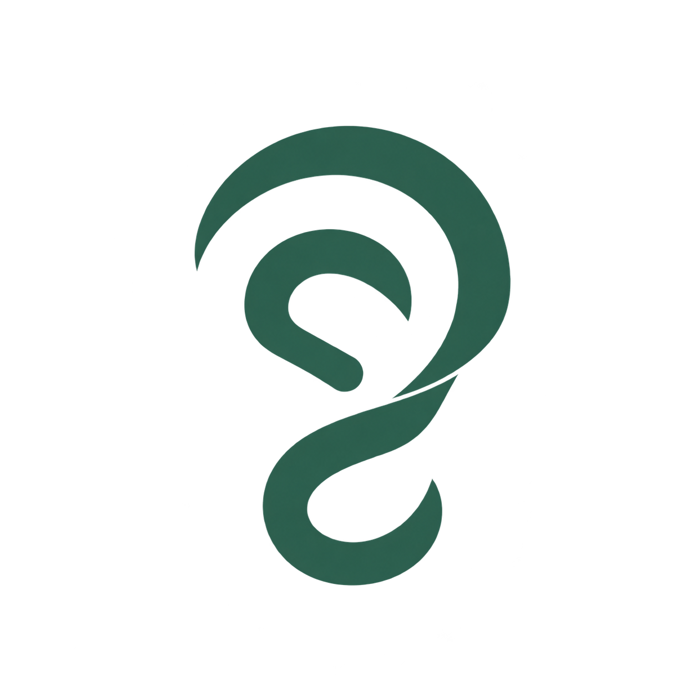
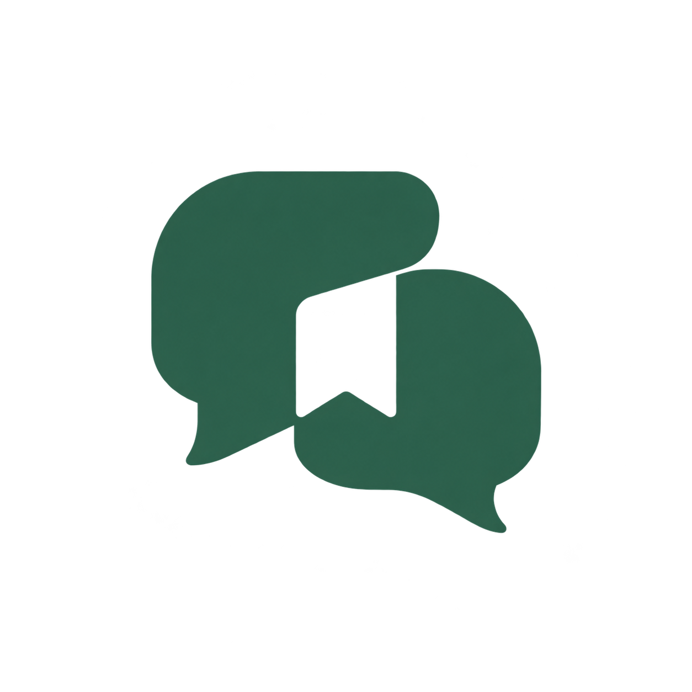
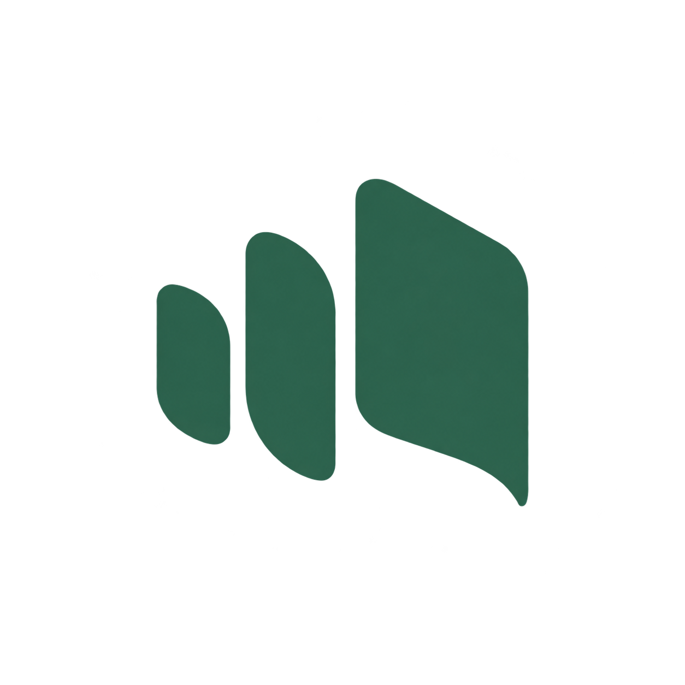

聆记01 · 倾听成环
用连贯的耳廓表达专注倾听。轮廓柔和、辨识直接，适合亲近用户的产品入口。
下载透明 PNG ↗LINGJI / IDENTITY EXPLORATIONS
三种标识方向，同一抹松绿色。
从倾听开始，到对话被记住。

聆记用连贯的耳廓表达专注倾听。轮廓柔和、辨识直接，适合亲近用户的产品入口。
下载透明 PNG ↗
聆记交错的对话形成一个完整印记。更强调多人交流、共识与会议记录。
下载透明 PNG ↗
聆记由声音的节奏展开为一页记录。形状更克制，适合应用图标与现代工作台。
下载透明 PNG ↗